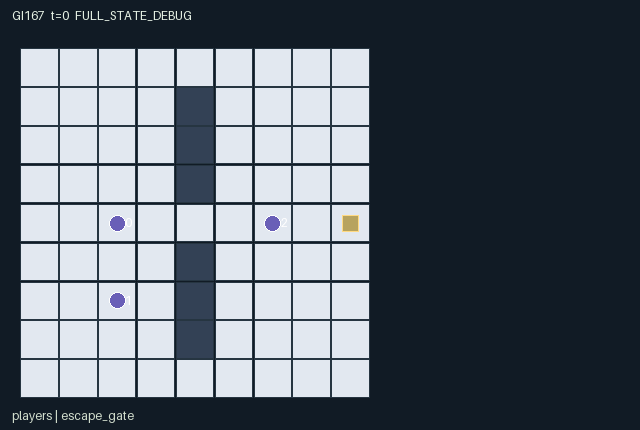

GI167 / SPATIAL
回声追逐
猎人与逃跑者都由控制器行动；扫描回声不能区分真目标与诱饵，分享和隐蔽消耗能量。
Original saved demonstration
Recorded native state, often authored scripts or interventions; information scope and failures are preserved in the original provenance. This is a saved demonstration, not live browser play.

Release verification episode
Untrained uniform legal actions. Actual JAX state sampled along the full original episode; full-state debug camera. No human performance or learning claim.

Run this game
crucibles play --game 167
Start Python locally, then open the address printed by the terminal. Installation, multiplayer, takeover and keyboard controls →
Objective, rewards & ending
Exact task contract
{
"objective": "Two controlled hunters seek a capture; the controlled evader seeks an explicit gate escape after tick eight. Scans exchange energy and concealment for imperfect persistent contacts.",
"natural_termination": "Explicit hunter tag within Manhattan one after movement causes capture; otherwise explicit evader action at open gate causes escape. Capture takes precedence if simultaneous. H=48 is only truncation, not evader victory.",
"interaction": "Costly scans reveal the scanner current position for two ticks while obtaining nearest radius-five echo; a physical decoy can replace the true contact. A relay copies contact information to the teammate without refreshing age. Movement, cloak, decoys and explicit capture alter interception opportunities.",
"observation_access": "Map/gate and scan broadcasts are public. Agents use Manhattan local sight two, reduced to one for cloaked evader; active scanner beacons reveal their position globally. Contact records are receiver-private. Scene uses exactly these native masks and never reveals hidden evader or unseen decoy."
}Declared per-step reward bounds: -23 to 20. Observability: partially_observable.
Rules
- Hunters and evader all take controlled actions on the native map; characters may share cells, which enables capture attempts.
- Wait recovers one energy up to eight. Scanning/decoy placement costs two; relaying/cloaking costs one.
- A scan records the nearest echo within five cells; ties favor a live decoy. It does not label real versus false contacts.
- A scanner broadcasts its current position for two ticks. Contact records persist for three ticks and relays preserve their remaining lifetime.
- Evader has two decoys, each lasting four ticks; cloak reduces local sight of evader to radius one for two ticks.
- Hunter capture action checks distance at settlement. Escape requires the open gate from tick eight and its explicit action.
- Capture wins a simultaneous capture/escape; otherwise H=48 truncates. Terminal states absorb.
Original mechanism document (historical status wording retained)
# Echo Pursuit
Three controlled agents are two hunters and one evader. The map has a vertical movement barrier at x=4 except openings at y=0,4,8; sight and scan use Manhattan radius and do not model wall occlusion. This explicit rule avoids implying a richer line-of-sight sensor than the implementation. All players can occupy the same cell; capture requires an explicit hunter action, never incidental contact.
Scans cost two energy, produce the nearest echo within five Manhattan cells, and broadcast the scanner current position for two ticks. The echo is only coordinates and a three-tick lifetime. It is not a typed evader measurement: a live decoy at an equal or shorter distance is returned instead. Decoy placement uses a finite budget of two and leaves a physical four-tick beacon. An evader may continue moving after placing it. A scan with no contact clears that hunter contact. Local direct sight, separately, can reveal agents and physical decoys within radius two.
Relay costs one energy and copies the sender previous contact coordinates with its remaining lifetime reduced by one. No relay refreshes a contact and there is no same-tick information chain: relays read the input state. Receiver scans have precedence over received relays on that transition. A last-tick contact cannot be prolonged by relaying. The teammate can intercept from a different approach while the scanner accepts the disclosure cost. Evader movement, false echoes or a one-energy two-tick cloak can alter that plan. These are source-reasoned alternatives, with no behavioral or learning measurements.
Only own energy, budget and cloak are directly observed. The scene binds no hidden energy or cloak attribute. Native agent visibility is local sight, self visibility or an active scanner beacon; a cloaked evader requires distance at most one. Native contacts are visible only to their respective receiver, including relay recipients. Locally visible decoys expose the same TTL as their observation fields. All coordinates shown in a role view are actually available to that role. Full-state/debug presentation, if later supplied, must remain separately labelled.
Energy bounds are 0..8, decoy budget 0..2, cloak/pulse 0..2, decoy TTL 0..4 and contact TTL 0..3. Movement cannot enter walls or leave [0,8]^2. Observation hidden-coordinate sentinel is -1; other numeric fields are raw integers cast once to float32. No stochastic state is used in this original kernel; key and script seed are retained by the interface/provenance, with no substitute random distribution. Invalid requests deterministically become wait and therefore recover energy under the literal wait rule.
Capture requires hunter action 7 and post-movement Manhattan distance at most one. Evader action 7 requires its input gate-open mask and location; capture has natural priority if both events coincide. Time limit alone grants neither team a terminal victory reward. All raw terminal calls preserve cause/state/clock and return zero rewards.
Authorship and status: gpt-6-astra / max, original attempt_00, AUTHORED_NOT_EXECUTED, source_split=train, final_test_used=false. This identity is the assigned author self-report; root retains independent dispatch evidence. Source SHA256: 4063107ebba39493e0237a3e79e2b174741ff016dbe2e19c5afac143c66e10f4. A/O/U/H = 3/40/8/48.
The author has not imported or executed candidate.py, JAX or NumPy; no reset, raw_step, observe, legal_actions, JIT, vmap, rollout, training, rendering, browser, remote execution or additional model/API call occurred. Only supplied trusted stdlib AST/manifest/scene checks and literal metadata checks were run. AST/schema acceptance is not R0, numerical parity, gameplay validation, learnability or transfer. Eager/JIT/vmap parity remains unmeasured, with no tolerance invented.
All state small signed fields use int32; bool flags remain bool. Reset keys are trusted-interface inputs, not duplicated as mutable PRNG state. Clock increments once for a nonterminal call. Natural termination takes priority over horizon; truncated=(t>=H)&~terminated. An already-terminal call preserves every leaf and observation, returns zero reward and all dones=true, retaining the real causes. The source does not autoreset. Native map layout is explicitly public. Literal per-role observation and rendering masks are included in the manifest and source.
The five supplied upstream reference files were byte-read for SHA256 integrity only, not semantically read or copied. No upstream source snippet was used. The assigned community ecosystem requirements refer to JaxMARL multiagent interfaces, Pgx board-game APIs, Craftax game/world mechanics, and PureJaxRL / Craftax PPO algorithm integration as distinct concerns. This original game kernel does not substitute any of those PPO implementations for the frozen learner. Runtime adapter/replay/animation are later integration responsibilities; no generated animation or empirical acceptance is claimed.
Input provenance is exact in author_input_freeze.json: all twenty enumerated files plus final batch authority and scope clarification. Current 166-169 requests/designs control identity; inherited requirement games 154-157 is retained only as the byte-exact product/interaction requirement source. No prior source, result, payoff, selection, hidden/final-test input or parent history was read.
The playthrough is a finite literal hypothesis. Its original paired intervention changes exactly one actor-action component, uses the same seed/prefix and same-length branches, and states the source-derived delay. Later negative, zero, blocked, illegal or early-terminal evidence must remain unchanged. No author-executed solvability or success claim is made.
Interface source lines: reset=25, observe=68, legal_actions=49, raw_step=80.
Literal source evidence:
- candidate.py:12: def refresh(self, s):
- candidate.py:49: def legal_actions(self, s):
- candidate.py:94: place = a[2] == 5
- candidate.py:102: relay = (a[i] == 6) & (s["signal_ttl"][i] > 1)
- candidate.py:110: use_decoy = (n["decoy_ttl"][0] > 0) & (false_d <= real_d)
- candidate.py:116: n["pulse"] = n["pulse"].at[i].set(jnp.where(n["scan_event"][i], 2, n["pulse"][i]))
- candidate.py:119: n["capture"] = jnp.any((a[:2] == 7) & contact)
- candidate.py:120: n["escape"] = (a[2] == 7) & (n["t"] >= 8) & jnp.all(n["pos"][2] == n["gate_pos"][0]) & ~n["capture"]
- candidate.py:127: n = {k: jnp.where(s["done"], s[k], n[k]) for k in s}
Commands
Roles & abilities
agent_0 Controlled hunter 0
agent_1 Controlled hunter 1
agent_2 Controlled evader
Observation permissions
Training receives only the original observation rows. Role cameras use declared visibility; debug cameras are explicitly marked. Local benchmark records log debug exposure and role takeover history.
Exact observation layout
[
{
"slice": [
0,
2
],
"meaning": "Own x,y.",
"visibility": "self"
},
{
"slice": [
2,
3
],
"meaning": "Own energy 0..8.",
"visibility": "self"
},
{
"slice": [
3,
4
],
"meaning": "Own remaining decoys; hunters have zero.",
"visibility": "self"
},
{
"slice": [
4,
5
],
"meaning": "Own remaining cloak ticks.",
"visibility": "self"
},
{
"slice": [
5,
8
],
"meaning": "Own identity one-hot; identities 0,1 are hunters and 2 is the controlled evader.",
"visibility": "self"
},
{
"slice": [
8,
9
],
"meaning": "Public elapsed ticks.",
"visibility": "public"
},
{
"slice": [
9,
10
],
"meaning": "Public escape-gate open flag (t>=8).",
"visibility": "public"
},
{
"slice": [
10,
22
],
"meaning": "Subject-major rows for agents 0,1,2: masked x,y (-1 hidden), visible flag, visible pulse ticks (0 hidden). Local radius two, cloaked evader radius one; active scanner pulse broadcasts current position to everyone.",
"visibility": "local"
},
{
"slice": [
22,
26
],
"meaning": "Decoy x,y or -1; visible flag; visible TTL or zero. Radius two or evader ownership; inactive decoy hidden.",
"visibility": "local"
},
{
"slice": [
26,
34
],
"meaning": "Receiver-major echo records 0 and 1: x,y or -1; visible flag; remaining contact TTL or zero. Only the respective receiver can see its record. Coordinates may be stale or a decoy, not evader identity.",
"visibility": "self"
},
{
"slice": [
34,
36
],
"meaning": "Public escape-gate x,y.",
"visibility": "public"
},
{
"slice": [
36,
38
],
"meaning": "Public scan action flags for hunters 0 and 1.",
"visibility": "public"
},
{
"slice": [
38,
39
],
"meaning": "Public terminal capture event.",
"visibility": "public"
},
{
"slice": [
39,
40
],
"meaning": "Public terminal escape event.",
"visibility": "public"
}
]Entity visibility & attributes
[
{
"id": "players",
"kind": "agent",
"count": 3,
"position": [
"pos"
],
"active": [
"agent_active"
],
"visibility": [
"agent_vis"
],
"attributes": [
{
"state_path": [
"role"
],
"meaning": "Fixed role: 0 hunter, 1 evader",
"display": "category"
},
{
"state_path": [
"pulse"
],
"meaning": "Remaining scanner broadcast ticks",
"display": "number"
}
]
},
{
"id": "decoy",
"kind": "object",
"count": 1,
"position": [
"decoy_pos"
],
"active": [
"decoy_active"
],
"visibility": [
"decoy_vis"
],
"attributes": [
{
"state_path": [
"decoy_ttl"
],
"meaning": "Physical decoy lifetime",
"display": "number"
}
]
},
{
"id": "contacts",
"kind": "object",
"count": 2,
"position": [
"signal_pos"
],
"active": [
"signal_active"
],
"visibility": [
"signal_vis"
],
"attributes": [
{
"state_path": [
"signal_ttl"
],
"meaning": "Receiver contact lifetime; coordinates may be stale or false",
"display": "number"
}
]
},
{
"id": "escape_gate",
"kind": "gate",
"count": 1,
"position": [
"gate_pos"
],
"active": [
"gate_active"
],
"visibility": [
"gate_vis"
],
"attributes": [
{
"state_path": [
"gate_open"
],
"meaning": "Open from tick eight",
"display": "flag"
}
]
}
]Actual verification & provenance
Per-game execution receipt
{
"game": "gi167",
"status": "PASS",
"verification_revision": 2,
"source_sha256": "4063107ebba39493e0237a3e79e2b174741ff016dbe2e19c5afac143c66e10f4",
"seed": 20261101,
"runtime": {
"jax": "0.4.38",
"numpy": "1.26.4",
"devices": [
"TFRT_CPU_0"
]
},
"dimensions": {
"num_agents": 3,
"observation_size": 40,
"num_actions": 8,
"max_steps": 48
},
"checks": {
"eager_reset": {
"status": "PASS",
"seconds": 2.0674362182617188
},
"observation_spaces_legal_masks": {
"status": "PASS",
"seconds": 1.1288800239562988
},
"eager_step": {
"status": "PASS",
"seconds": 2.2147860527038574
},
"jit_reset": {
"status": "PASS",
"seconds": 0.17704534530639648
},
"jit_step": {
"status": "PASS",
"seconds": 0.6278696060180664
},
"eager_jit_integer_parity_float_measurement": {
"status": "PASS",
"seconds": 0.0009999275207519531
},
"jit_vmap_reset": {
"status": "PASS",
"seconds": 0.15604138374328613
},
"jit_vmap_step": {
"status": "PASS",
"seconds": 0.7830917835235596
},
"outer_autoreset_api": {
"status": "PASS",
"seconds": 0.8161849975585938
},
"full_original_horizon_episode_and_render": {
"status": "PASS",
"seconds": 1.6515049934387207
}
},
"human_scores": null,
"browser_controls": "PENDING",
"failures": [],
"elapsed_seconds": 10.363703966140747,
"float_parity_max_abs": 0.0,
"numerical_parity": "EXACT",
"raw_terminal_absorbing": "PASS",
"terminal_outer_reset": "PASS",
"episode_steps": 48,
"scripted_random_returns": [
-8.0,
-14.0,
-10.0
],
"terminal": true,
"demo_information": "FULL_STATE_DEBUG",
"demo_frames": 25,
"render_roles_checked": 3
}Chromium control verification
{
"game": "gi167",
"status": "PASS",
"human_scores": null,
"engineering": true,
"checks": [
"catalog_selected_and_real_native_reset",
"dom_queue_and_native_step",
"second_participant_ownership_and_native_joint_step",
"all_roles_individually_controllable_no_role_cap",
"explicit_debug_camera",
"release_to_pure_ai_without_reset"
],
"seconds": 4.436892747879028
}Original identity and file hashes
{
"id": 167,
"key": "gi167",
"title": "回声追逐",
"summary": "猎人与逃跑者都由控制器行动；扫描回声不能区分真目标与诱饵，分享和隐蔽消耗能量。",
"tags": [
"追逐",
"模糊感知"
],
"family": "spatial",
"dimensions": {
"num_agents": 3,
"observation_size": 40,
"num_actions": 8,
"max_steps": 48
},
"source_sha256": "4063107ebba39493e0237a3e79e2b174741ff016dbe2e19c5afac143c66e10f4",
"manifest_sha256": "e11115bd0bb176a9e9a9fd6391615d91a2e4a829cc6adae37a89ec93c7f594cd",
"files": [
{
"file": "candidate.py",
"sha256": "4063107ebba39493e0237a3e79e2b174741ff016dbe2e19c5afac143c66e10f4",
"bytes": 8372,
"origin": "work/exp_2/game_incubator_v3/community_games222_225_visualization_root222_v1/native154_candidate/registry/v2/games/game-v3-00167/candidate.py"
},
{
"file": "manifest.json",
"sha256": "e11115bd0bb176a9e9a9fd6391615d91a2e4a829cc6adae37a89ec93c7f594cd",
"bytes": 12067,
"origin": "work/exp_2/game_incubator_v3/community_games222_225_visualization_root222_v1/native154_candidate/registry/v2/games/game-v3-00167/manifest.json"
},
{
"file": "scene.json",
"sha256": "4a02e3d178472f0ba67656d5b90472241ae6154997d6e78df05734ef5fa7495a",
"bytes": 6707,
"origin": "work/exp_2/game_incubator_v3/community_games222_225_visualization_root222_v1/native154_candidate/registry/v2/games/game-v3-00167/scene.json"
},
{
"file": "mechanism.md",
"sha256": "9351363e8b7e72f613449397cb07ad2307debbd2cb22e8aa13b97874de8f2a03",
"bytes": 6472,
"origin": "work/exp_2/game_incubator_v3/sources/game-v3-00167/attempt_00/mechanism.md"
},
{
"file": "playthrough.json",
"sha256": "0d04b3176ad142e45bc66ee8ca7b2c0f229c706bdee02aa7ce0822be995aaec9",
"bytes": 2675,
"origin": "work/exp_2/game_incubator_v3/sources/game-v3-00167/attempt_00/playthrough.json"
}
],
"original_status": "NATIVE154_REFERENCE",
"original_saved_replay": true,
"release_validation": "PASS",
"human_scores": null,
"browser_validation": "PASS"
}